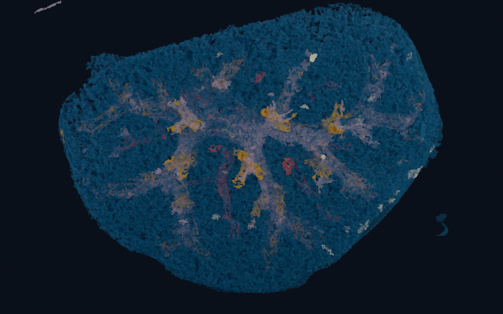
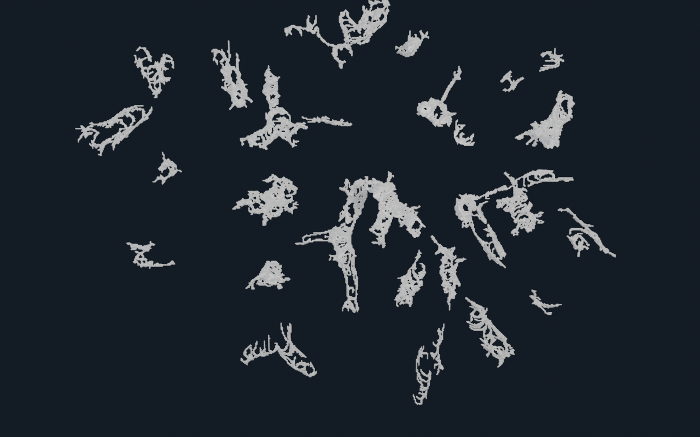

Digital pathology · serial histology
3D reconstruction of mouse lung at cellular resolution
Using CODA (Kiemen et al., Nature Methods 2022): registration, deep-learning tissue labelling, and volumetric assembly from 150 serial H&E whole-slide images.

Method
Digitized serial sections enable quantitative maps of tissue architecture. We apply the official CODA workflow to the public mouse-lung sample dataset (20× NDPI, ~10 µm section spacing).
- Registration Nonlinear alignment of downsampled 1× stacks
- Segmentation DeepLab / ResNet50 multi-class tissue labels
- Volume Registered labels assembled into a 3D tissue matrix
Pipeline
- Downsample NDPI → 10× / 5× / 1× TIFF (OpenSlide)
- Tissue masks + elastic image registration (1×)
- Train / apply semantic segmentation (10×)
- Warp labels; build
volume.mat(4 µm/px) - Mesh + Blender Cycles visualization for the web
Independent run workspace: coda_lungs_auto · code package: CODA update 12-13-2023
Results


Class volume table will appear here when class_stats.csv is ready.
3D visualization
Turntable / stills rendered in Blender (Cycles, AgX). Embed updates when frames are exported.

- bronchioles
- alveoli / nonexpanded
- vasculature
- cancer
- stroma